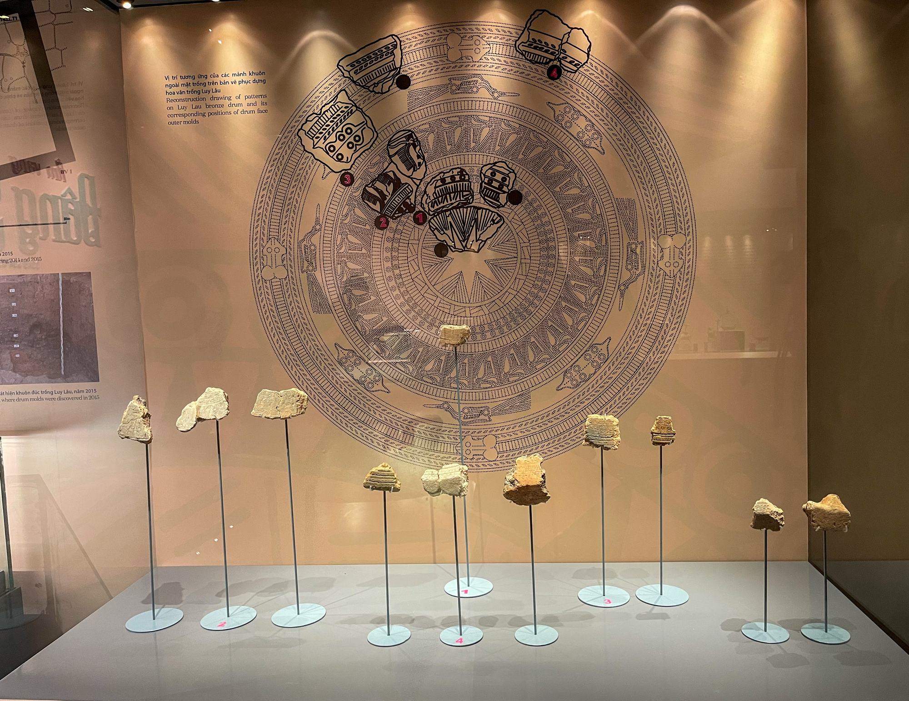
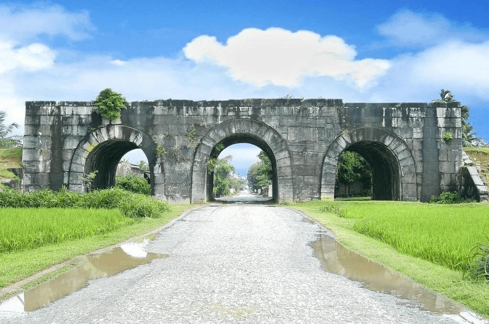
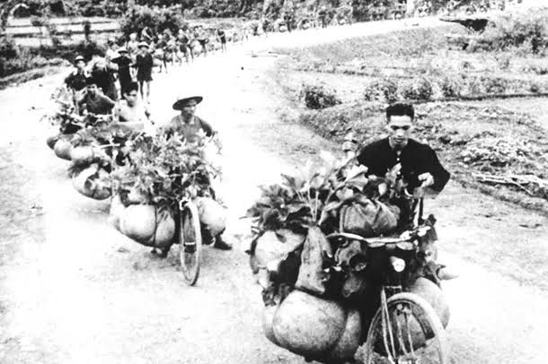
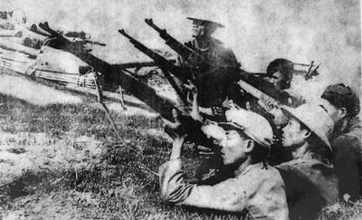

DẤU ẤN XỨ THANH
Lịch sử địa phương
Thanh Hóa sở hữu vị thế địa - lịch sử đặc biệt quan trọng, là không gian văn hóa - lịch sử lâu đời và là cái nôi của nhiều phong trào đấu tranh dựng nước, giữ nước trong lịch sử dân tộc. Tiến trình lịch sử địa phương liên tục ghi dấu các sự kiện và nhân vật lịch sử tiêu biểu mang tầm vóc quốc gia.
1. Nền văn minh Đông Sơn
Cái nôi văn minh sông Mã: Làng cổ Đông Sơn (thuộc phường Hàm Rồng, thành phố Thanh Hóa) là địa điểm đầu tiên phát lộ các di chỉ khảo cổ học vào năm 1924, từ đó trở thành danh xưng chính thức đại diện cho Nền văn hóa Đông Sơn - nền văn hóa thời đại Đồ đồng và Sắt sớm nổi tiếng của người Việt cổ, tồn tại từ thế kỷ VIII TCN đến thế kỷ II SCN.

Địa bàn phân bố trù phú: Các di chỉ khảo cổ học thuộc Văn hóa Đông Sơn tập trung mật độ cao tại vùng hạ lưu sông Mã (tiêu biểu như di chỉ Đông Sơn, Quỳ Chữ, Thiệu Dương...), nơi sở hữu đồng bằng phù sa màu mỡ, nguồn nước dồi dào, tạo điều kiện thuận lợi cho việc định cư lâu dài và phát triển kinh tế nông nghiệp lúa nước của cư dân Việt cổ. Kinh tế & Xã hội: Phát triển mạnh nông nghiệp lúa nước và các nghề thủ công. Xã hội phân hóa giàu nghèo rõ rệt, bước vào giai đoạn hình thành tổ chức nhà nước sơ khai (thời kỳ Hùng Vương). Đỉnh cao kỹ nghệ đúc đồng: Kỹ thuật luyện kim và chế tác kim khí thời kỳ này đạt đến trình độ đỉnh cao của văn minh nhân loại, tiêu biểu nhất là hệ thống trống đồng Đông Sơn (như trống Ngọc Lũ, trống Hoàng Hạ) cùng phong phú các chủng loại vũ khí, công cụ lao động và đồ trang sức được chế tác vô cùng tinh xảo.
2. Thời phong kiến
Mốc định danh hành chính (Năm 1029): Dưới triều vua Lý Thái Tông, thể chế quản lý hành chính toàn quốc được điều chỉnh chia thành 24 lộ, trong đó chính thức thành lập lộ phủ Thanh Hóa. Sự kiện này đánh dấu lần đầu tiên danh xưng "Thanh Hóa" xuất hiện trong lịch sử với tư cách là một đơn vị hành chính trực thuộc trung ương.

Vị thế "Quý hương" và "Thang mộc": Trong tiến trình lịch sử quân chủ Việt Nam, Thanh Hóa giữ vị thế là vùng đất phát tích, khởi nghiệp của nhiều triều đại phong kiến, đóng vai trò địa bàn chiến lược trọng yếu - "phên dậu" vững chắc và là "đất căn bản của nước Nam". Nơi đây là quê hương của 44 vị quân vương thuộc 4 triều đại phong kiến: Tiền Lê (2 vị vua), Hồ (2 vị vua), Hậu Lê (27 vị vua) và Nguyễn (13 vị vua); đồng thời là quê gốc của hai dòng họ Vương/Chúa có tầm ảnh hưởng sâu rộng trong lịch sử là họ Trịnh và họ Nguyễn. Hệ thống di sản văn hóa - lịch sử tiêu biểu thời kỳ phong kiến trên địa bàn Thanh Hóa được thể hiện tập trung qua các công trình trọng điểm mang tầm vóc quốc gia và quốc tế: Khu di tích Quốc gia đặc biệt Lam Kinh (Thọ Xuân) - căn cứ phát tích cuộc khởi nghĩa Lam Sơn và là không gian lăng miếu tổ đường của vương triều Hậu Lê; Di sản Văn hóa Thế giới Thành Nhà Hồ (Vĩnh Lộc) - công trình kinh đô phương Đông đại diện cho đỉnh cao kỹ thuật kiến trúc quân sự bằng đá độc đáo hiếm có trên thế giới; cùng Khu di tích Quốc gia đặc biệt Đền Bà Triệu (Hậu Lộc) - không gian kiến trúc tâm linh tôn vinh công lao và tinh thần kiên trung của Nữ anh hùng dân tộc Triệu Thị Trinh trong phong trào chống phong kiến phương Bắc thế kỷ III.

3. Thời kháng chiến chống Pháp và chống Mỹ
Kháng chiến chống Pháp
Vai trò hậu phương chiến lược trong Kháng chiến chống Pháp: Trong cuộc kháng chiến chống thực dân Pháp, Thanh Hóa giữ vai trò là địa bàn hậu phương lớn, cung cấp khối lượng khổng lồ sức người, sức của, góp phần quyết định vào thắng lợi của Chiến dịch Điện Biên Phủ (1954). Địa phương là quê hương của nhiều tấm gương anh hùng liệt sĩ tiêu biểu như Tô Vĩnh Diện, Trần Đức, Lê Công Khai, Trương Công Man, cùng hàng vạn dân công hỏa tuyến, thanh niên xung phong đã trực tiếp cống hiến và hy sinh trên các tuyến đường ra mặt trận. Đánh giá về những đóng góp to lớn của đảng bộ và nhân dân địa phương, Chủ tịch Hồ Chí Minh đã khẳng định: “Bây giờ tiếng Việt Nam đến đâu, tiếng Điện Biên Phủ đến đó. Tiếng Điện Biên Phủ đến đâu, đồng bào Thanh Hóa cũng có một phần vinh dự đến đó”.

Kháng chiến chống Pháp
Vai trò tiền tuyến - hậu phương và Chiến thắng Hàm Rồng trong Kháng chiến chống Mỹ: Trong cuộc kháng chiến chống Mỹ cứu nước, khu vực Cầu Hàm Rồng (thành phố Thanh Hóa) trở thành trọng điểm đánh phá ác liệt - "tọa độ lửa" của không quân Mỹ nhằm cắt đứt tuyến giao thông huyết mạch kết nối hậu phương lớn Miền Bắc với tiền tuyến Miền Nam. Trong trận chiến lịch sử ngày 3 và 4 tháng 4 năm 1965, quân và dân Thanh Hóa đã phối hợp chặt chẽ với các lực lượng chủ lực, chiến đấu kiên cường và bắn hạ 47 máy bay chiến đấu của địch, bảo vệ an toàn mục tiêu chiến lược. Khai thác vị thế địa - chính trị và quân sự đặc biệt của địa phương, Tổng Bí thư Lê Duẩn từng nhấn mạnh: “Nếu như Quân khu IV là quan trọng thì Thanh Hóa là quan trọng nhất, bởi vì Thanh Hóa là hậu phương trực tiếp của mặt trận Bình - Trị - Thiên và Lào”.
